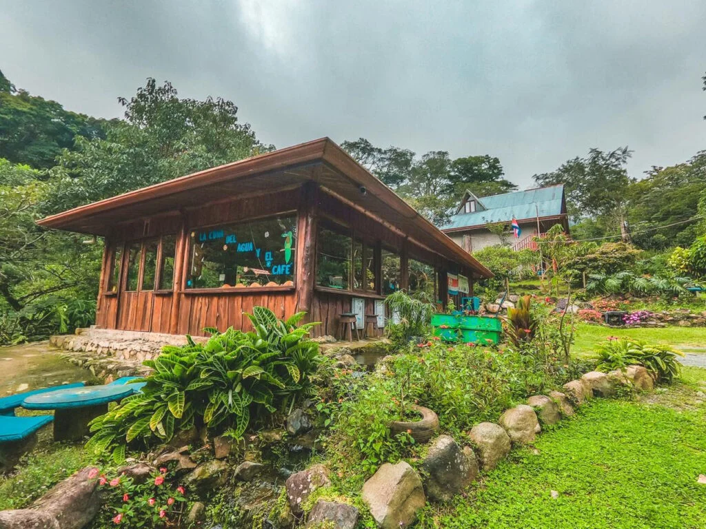

Pequeñas acciones locales.
Un impacto colectivo real.
ECRA es un espacio abierto para convertir la preocupación ambiental en acciones concretas. Descubre retos sostenibles que puedes aplicar hoy, visibiliza problemas de tu comunidad y colabora con vecinos en proyectos que transforman nuestro entorno.

Cómo funciona ECRA
Diseñado para que cualquier persona, sin importar su edad o presupuesto, pueda pasar de la intención a la práctica ciudadana.
1. Elige un reto accesible
Explora desafíos clasificados por dificultad: separación de residuos, ahorro de agua en el hogar, protección de polinizadores o reducción de plástico. Puedes iniciarlos de inmediato sin registro obligatorio.
2. Plantea tu iniciativa en los foros
¿Hay un botadero clandestino en tu barrio? ¿Quieres organizar una reforestación? Crea una publicación clasificada por estado y comunidad para encontrar apoyo y abrir el diálogo.
3. Colabora y mide el progreso
Únete a proyectos de otros vecinos con la opción «Quiero colaborar». Registra tus horas, comparte avances con fotografías y construye una comunidad más resiliente y limpia.
Retos ambientales destacados
Actividades prácticas que marcan una diferencia directa en tu entorno.
Iniciativas y foros de la comunidad
Descubre lo que vecinos y grupos locales están proponiendo hoy.
Cargando iniciativas comunitarias en vivo…